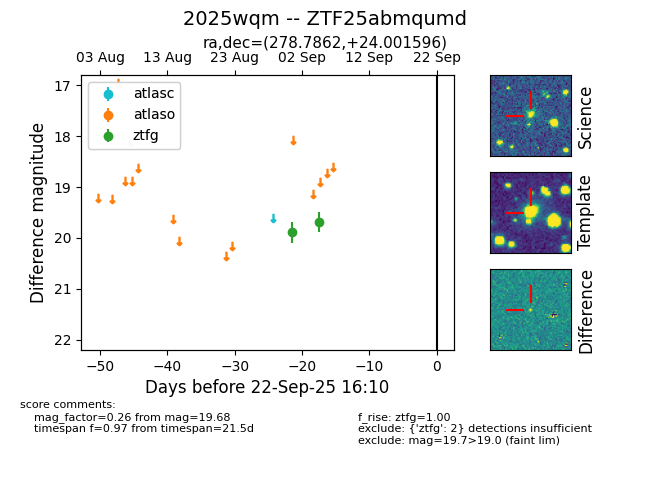

FINK: ZTF25abmqumd
Lasair: ZTF25abmqumd
ALeRCE: ZTF25abmqumd
TNS: 2025wqm
YSE: 2025wqm
ZTF25abmqumd (ztf,fink)
2025wqm (tns,yse)
equatorial (ra, dec) = (278.7862,+24.00160)
galactic (l, b) = (52.9744,+14.07715)

last ztfg=19.68
2 ztfg detections